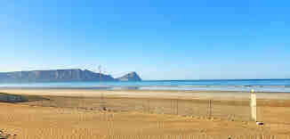

Coastal Escape
Ormara Tehsil
Walk along the hammerhead peninsula of Ormara, watch bioluminescent waves at night, visit Kund Malir along the Makran Coastal Highway, and enjoy fresh seaside seafood.
Explore Ormara